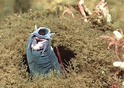

|
|
Lantern fish | Live at 2000 meter under water, like 666 floor tall.And the light was used for seeing |
|  | Hagfish | Lives in the deep Atlantic Ocean, can live under 4000 meter. |
| New Zealand Grey Fish |

|
| What is it | New Zealand Grey Fish is an extinct species of fish that was endemic to New Zealand. It was known to the Māori by many names, including pokororo, paneroro, kanae-kura, and most commonly, upokororo. |